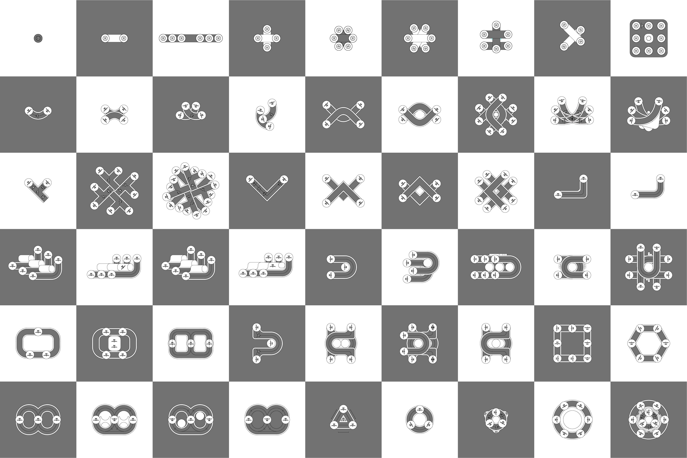

MINIPORTS:
Aviation for Everyday Living
Summary
Rural isolation is an issue Japan faces even though it has one of the most extensive transport networks in the world. Japan has four major islands; of these, Shikoku is the only one largely cut off by the Seto Inland Sea to the main transportation networks that spans throughout the other three.The rapid advent of automated aerial vehicles, however, has the potential to rapidly connect these formerly remote areas in a more direct and immediate manner to the Japanese economy. With Japan having the world’s largest aged population, as well as consistent rural depopulation, many of the residents living in the islands of the Seto Inland Sea face inconveniences regarding accessibility to healthcare and consumerism-related services, especially the elderly which make up at least a third of the population in this region.
The Japanese government is therefore trying to respond to these issues by promoting regional revitalisation via developments in infrastructure and transportation, as well as to create high-quality destinations for local and international tourists. In this thesis, I speculate on how Urban Air Mobility (UAM) could connect the Seto Inland Region into a larger Japanese mobility network and to focus on the ability of architecture to integrate this new urban system into existing cities and ways of living.
About Me
I love to travel, and Japan has been a yearly affair; the richness in scenery, architecture and new experiences makes it a place worth revisiting. These experiences and interests have helped to shape this thesis as well as to make informed decisions on both micro and macro scales.Name
Shawn Low
Mentor
Peter Ortner
Typology
Mini Airport
Site Location
Central Japan

![]()
![]()
![]()
![]()

Subsequently, these permutations were analysed to see where to best place circulation cores and redundancy areas for parking or maintenance on a general scale, which led to a non-exhaustive FATO Catalogue that could be referenced to when looking at new Miniport sites based on site conditions, or expected volume etc.
FATO Catalogue
The design methodology of Miniports in this thesis revolves around FATO (Final Approach and Take Off) Systems. These are basically the FATO pads as well as the taxiways between them. Preliminary studies were done on standard eVTOL sizes versus how much space they required on a runway, and was then expanded to various permutation possibilities such as linear, curvilinear, modular, scalable and multi-FATO systems.Subsequently, these permutations were analysed to see where to best place circulation cores and redundancy areas for parking or maintenance on a general scale, which led to a non-exhaustive FATO Catalogue that could be referenced to when looking at new Miniport sites based on site conditions, or expected volume etc.
Rural Miniport: Naoshima 直島
Naoshima was one of the sites chosen due to it's urban disconnection but also it's rising prominence within the Seto Inland Sea, which would benefit both visitors and locals with the introduction of an Urban Air Mobility (UAM) network.This is the site, miyanoura, their largest built up area where the main port of call is located. The miniport sits a top a sloping hill, with the single pharmacy and post office being down the street. The idea is to encapsulate these scattered small services into one integrated community hub which serves the community’s needs for transportation, commercial and leisure space.
The basic curvilinear FATO system option was chosen and scaled based on maximum footfall over the past Setouchi Triennale visitor numbers. Programmes were then fitted in the framework, which included spaces such as a delivery and telemedical centres.
The design is supposed to be distinct but not overbearing; simplicity being the key driver of beauty. It is open and non-cluttered; a juxtaposition to sterile, climate-controlled airports. Using regionally sourced materials to highlight the charm of the area as well as to bring forth lesser known narratives.

Urban Miniport: Takamatsu 高松市
It was also established that it will be ideal to look at how a miniport could be similarly constructed in a larger city within the UAM network. And the city chosen was Takamatsu, which is the nearest city south of Naoshima. Takamatsu is the district capital of the kagawa prefecture and was an important maritime port since historical periods.The site, a 1-hectare open field, is only occasionally used as a makeshift carpark and is located in an area with multiple major transportation nodes. In the vicinity you have Takamatsu Port for ferries connecting the region, Takamatsu Station, with the only train line connecting Shikoku to Honshu, local train lines and bus terminals amongst others.
This is very ideal for a Miniport, which follows the thesis statement of the miniports being integrated into a larger mobility network and allows for the possibility to amalgamate various transportation routes, having covered land, air and sea. The site being next to the sea also offers uninterrupted airspace for the ingress and egress of eVTOL aircraft.
With eVTOLs using electric multirotors instead of gas engines, they are expected to be seven times quieter than helicopters on takeoff, at an expected decibel range of common traffic around the area. The overall stacking logic is shown in the video below, which was refined over various iterations.
Air Mobility at the Heart of the City
Traffic mainly happens at the sides of the building, with foot traffic coming in from the west, and vehicular from the east. The plan is split so that the north holds amenity space that covers two floors, including eateries, regional produce stores etc. The south will house the drone delivery sorting centre, which will receive, sort and deliver incoming and outgoing parcels. The rather squarish plot made it a good choice to implement one of the larger, vertically scaling FATO system frameworks to build upon (See Floor Plan Below).(Left) A typical floor plan, in this case the 4th floor, where similar to the Naoshima Miniport you have your ingress and egress, a parking/maintenance space and drop off and pick up from the central lift lobby. The taxiways have been extended and optimised to the cores to accommodate the higher traffic volume in Takamatsu.
The design intentionally exposes structures allowing for a well cross-ventilated building to prevent downdrafts on the numerous landing pads. This ideally conveys the feeling of lightweightedness, with movement clearly seen throughout the building from all angles; akin to a living organism. This is similarly expressed in the Rural Miniport but translated through different materiality and form.